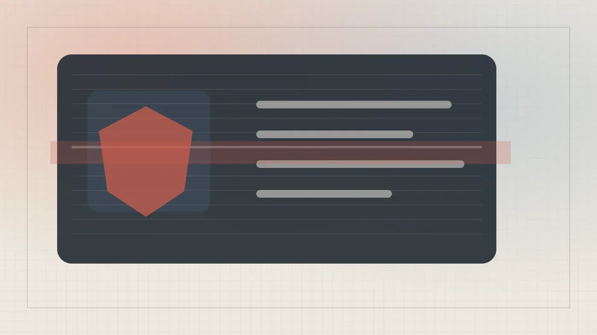

РоссияКод
ЦОДам в Москве отказывают в подключении к сети, они вынуждены строить собственные
Дата-центры в Москве строят собственные электростанции из-за дефицита сетевой мощности
Habr AI
17 июн.Материалы из источника Habr AI.
191 материалов
Дата-центры в Москве строят собственные электростанции из-за дефицита сетевой мощности
Тестируем модный скилл Caveman: экономия токенов оказалась мифом, а качество задач упало
Как измерить опыт разработчика объективно: от DORA до DX Core 4 — разбор ключевых фреймворков
За пару часов понять разницу между ИИ-агентом и чат-ботом и найти задачи для автоматизации — что внутри бесплатного курса.
Как дать ИИ-агенту право менять данные на складе — и сохранить аудит и безопасность
ASCO 2026: ИИ-симуляторы ускоряют решения ординаторов на 28% — и создают новый риск
ИИ слушает интервью и подсказывает вопросы, которые поставят кандидата в тупик
Claude Code случайно снёс продакшен на AWS — история восстановления БД и уроки для инженеров.
BIM застрял в презентациях, а камеры смотрят только после ЧП — что реально меняет стройку в 2026 году
Математики объединились против ИИ: что не так с достижениями OpenAI и чем это грозит науке
Практическое руководство по генерации тестовой документации с помощью ИИ: контекст, промпты, ревью и формат для TMS.
ЭвоКарго объяснила, почему датчики автономного грузовика врут — и как система всё равно едет точно
Как отличить реальную пользу ИИ от хайпа: метрики, которые связывают бизнес-цели с фактическими показателями.
Главный инженер Claude Code о пяти новых нормах работы, когда ИИ пишет код быстрее, чем люди успевают его проверять.
Почему умение объяснять «что хочу» стало важнее умения писать код — и при чём тут Золотая рыбка
118 000 уволенных айтишников за полгода — и компании при этом прибыльны. Что происходит с профессией разработчика
DHH против ThePrimeagen: почему Zig, curl и NetBSD закрылись для ИИ-кода — и кто из них прав

Один промпт, одна ночь — и 95% браузерных тестов пройдено. Как это работает?

Почему первое число на дашборде управляет всеми остальными решениями — и при чём тут ИИ

Нейросеть никогда не скажет «я не знаю» — и это главная причина проверять её ответы
SpaceX, Anthropic и OpenAI идут на биржу. Кто сколько стоит и что их сдерживает

Модель в 15 КБ бьёт float-аналог на MNIST и рассуждает без LLM — эксперимент из июня 2026
Бэкдор в LiteLLM, скачанный 47 тысяч раз за три часа — симптом нерешаемой уязвимости ИИ-агентов.
HashiCorp запустила Terraform MCP Server 1.0 — ИИ теперь пишет конфиги по свежим провайдерам
Что обсуждали на главной конференции по робототехнике — и почему Китай захватил выставку в Вене
Яндекс сравнил MCP и CLI + Skill на 400+ запросах — разница в расходе токенов достигает 5,5 раза
Белград, 1000 ML-специалистов и платформа LANDEV ИИ: что обсуждали на OpenTalks.AI 2026

Семь инструментов на Python — и языковая модель начинает читать файлы, запускать bash и ходить в интернет

30% разработчиков деплоят ИИ-код без проверки. Почему это старая проблема в новой обёртке

Что происходит, когда ИИ убирает все барьеры — и зачем они вообще были нужны